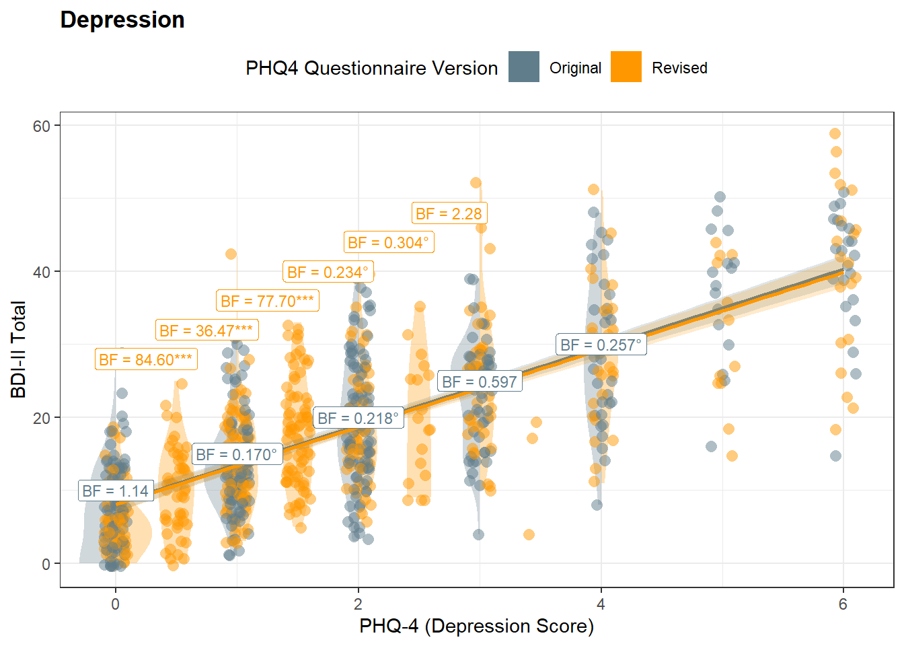
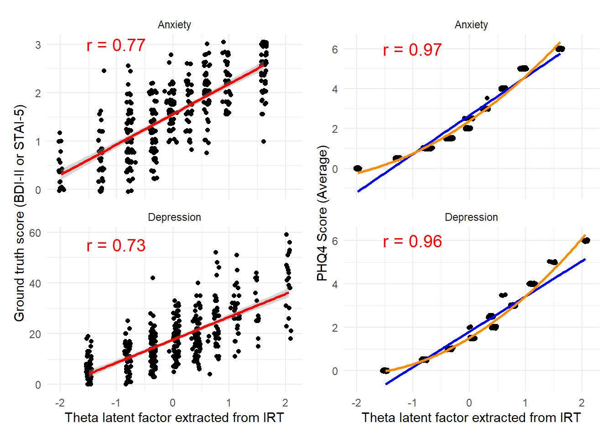
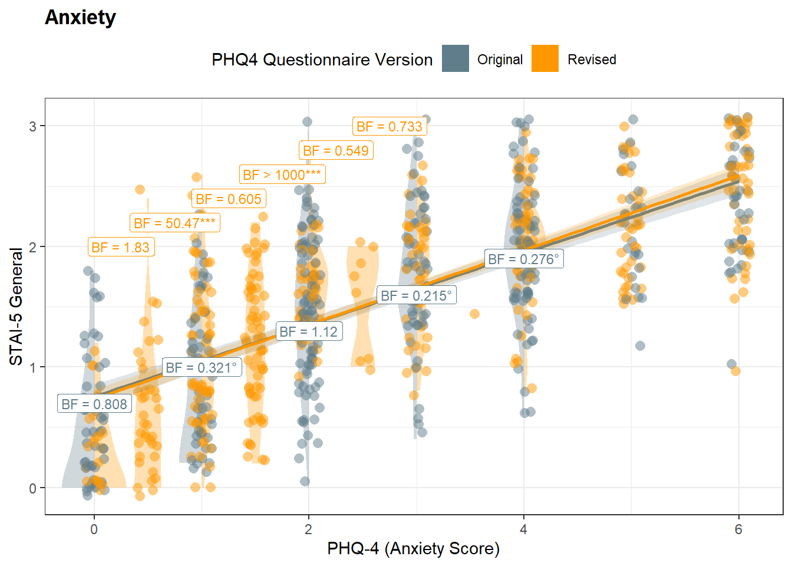
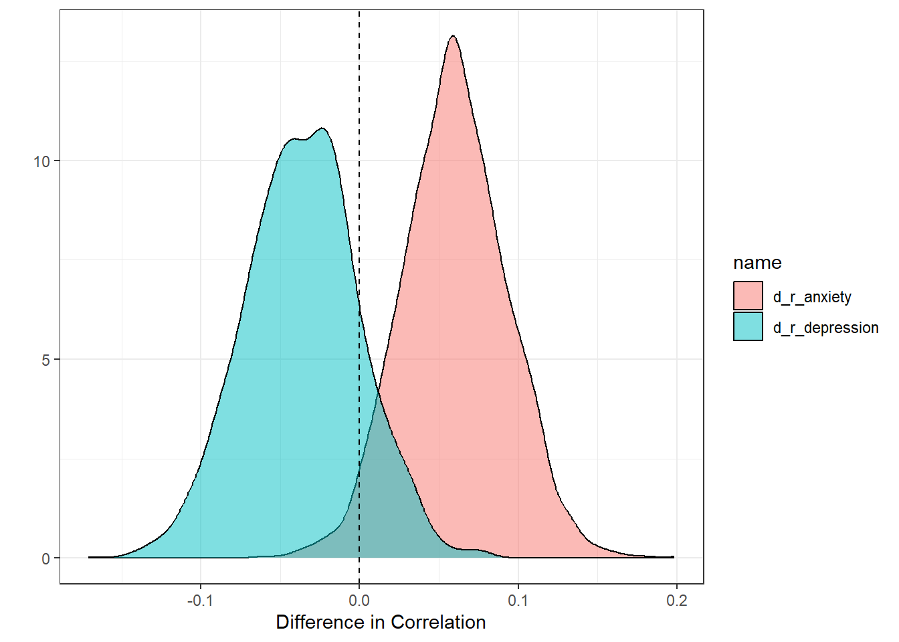
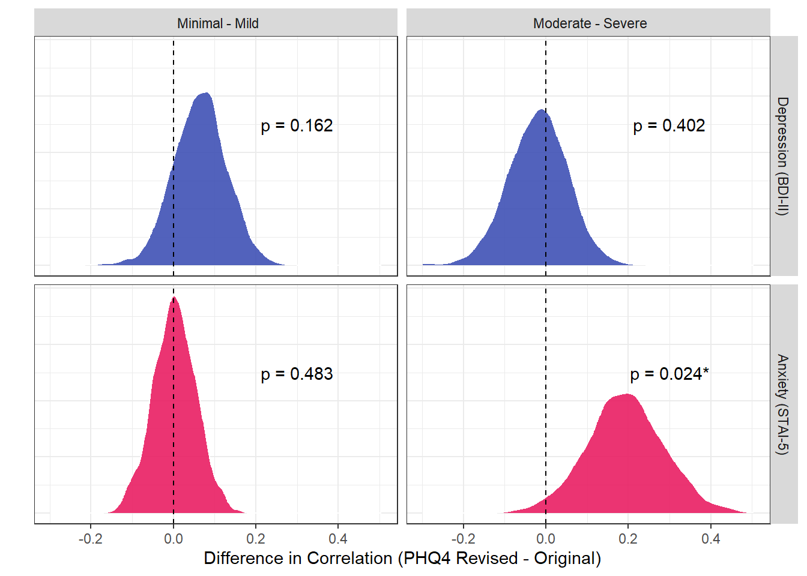

Code
library(tidyverse)
library(easystats)
library(patchwork)
library(ggside)
library(ggdist)
library(mirt)library(tidyverse)
library(easystats)
library(patchwork)
library(ggside)
library(ggdist)
library(mirt)df <- read.csv("../data/data.csv") |>
mutate(
PHQ4_Condition = fct_relevel(PHQ4_Condition, "PHQ4 - Original"),
PHQ4_Condition = fct_recode(PHQ4_Condition, "Original" = "PHQ4 - Original", "Revised" = "PHQ4 - Revised"),
# BDI2_Category = ifelse(BDI2_Total <= 12, "Subclinical", ifelse(BDI2_Total <= 18, "Mild", "Moderate+")),
BDI2_Category = ifelse(BDI2_Total <= 18, "Minimal - Mild", "Moderate - Severe"),
STAI5_Category = ifelse(STAI5_General < 2, "Minimal - Mild", "Moderate - Severe"),
PHQ4_Depression_Fac = as.factor(PHQ4_Depression)
)
colors <- c("Original" = "#607D8B", "Revised" = "#FF9800")model <- lm(BDI2_Total ~ PHQ4_Depression * PHQ4_Condition, data = df)
parameters::parameters(model) |>
display()| Parameter | Coefficient | SE | 95% CI | t(832) | p |
|---|---|---|---|---|---|
| (Intercept) | 8.23 | 0.59 | (7.08, 9.39) | 13.96 | < .001 |
| PHQ4 Depression | 5.34 | 0.23 | (4.90, 5.79) | 23.51 | < .001 |
| PHQ4 Condition (Revised) | -0.13 | 0.82 | (-1.73, 1.47) | -0.16 | 0.871 |
| PHQ4 Depression × PHQ4 Condition (Revised) | -0.05 | 0.33 | (-0.70, 0.60) | -0.15 | 0.883 |
get_bf <- function(resp="BDI2_Total", pred="PHQ4_Depression", levels=c(0, 0.5)) {
if(length(levels) == 2) {
bf <- BayesFactor::ttestBF(
df[df[[pred]] == levels[1] & df$PHQ4_Condition=="Revised", resp],
df[df[[pred]] == levels[2] & df$PHQ4_Condition=="Revised", resp])
} else {
bf <- BayesFactor::ttestBF(
df[df[[pred]]==levels & df$PHQ4_Condition=="Original", resp],
df[df[[pred]]==levels & df$PHQ4_Condition=="Revised", resp])
}
insight::format_bf(exp(bf@bayesFactor$bf), stars=TRUE)
}
get_databf <- function(resp="BDI2_Total", pred="PHQ4_Depression", y1, y2) {
# Between scores comparisons
bfs <- data.frame(
BF = c(get_bf(resp, pred, c(0, 0.5)),
get_bf(resp, pred, c(0.5, 1)),
get_bf(resp, pred, c(1, 1.5)),
get_bf(resp, pred, c(1.5, 2)),
get_bf(resp, pred, c(2, 2.5)),
get_bf(resp, pred, c(2.5, 3)))
)
bfs[[pred]] <- c(0.25, 0.75, 1.25, 1.75, 2.25, 2.75)
bfs[[resp]] <- y1
bfs$color <- "Revised"
# Within scores comparisons
bfs2 <- data.frame(
BF = c(get_bf(resp, pred, 0),
get_bf(resp, pred, 1),
get_bf(resp, pred, 2),
get_bf(resp, pred, 3),
get_bf(resp, pred, 4))
)
bfs2[[pred]] <- c(0, 1, 2, 3, 4)
bfs2[[resp]] <- y2
bfs2$color <- "Original"
bf <- rbind(bfs, bfs2)
# Lines behing labels
lines <- data.frame(
xmin = c(0, 0.5, 1, 1.5, 2, 2.5),
xmax = c(0.5, 1, 1.5, 2, 2.5, 3),
y = y1
)
list(bf=bf, lines=lines)
}
bfs <- get_databf(resp="BDI2_Total", pred="PHQ4_Depression", y1=c(28, 32, 36, 40, 44, 48), y2=c(10, 15, 20, 25, 30))
p_dep <- df |>
ggplot(aes(x = PHQ4_Depression, y = BDI2_Total), width=0.1) +
ggdist::stat_slab(
data = df[df$PHQ4_Condition == "Original" & df$PHQ4_Depression <= 4, ],
fill = colors["Original"],
alpha=0.3,
scale = 0.3,
position = position_dodge(width = 1),
side = "left") +
ggdist::stat_slab(
data = df[df$PHQ4_Condition == "Revised" & df$PHQ4_Depression %in% c(0, 1, 2, 3, 4), ],
fill = colors["Revised"],
alpha=0.3,
scale = 0.3,
position = position_dodge(width = 1),
side = "right") +
ggdist::stat_slab(
data = df[df$PHQ4_Depression %in% c(0.5, 1.5, 2.5), ],
fill = colors["Revised"],
alpha=0.3,
scale = 0.3,
position = position_dodge(width = 1),
side = "both") +
geom_jitter2(aes(color = PHQ4_Condition), width=0.1, alpha=0.5, size=3) +
geom_smooth(aes(color = PHQ4_Condition, fill=PHQ4_Condition),
method = "lm", formula="y~x", alpha=0.2, key_glyph = draw_key_rect) +
geom_segment(data=bfs$lines, aes(x=xmin, xend=xmax, y=y, yend=y), color=colors["Revised"], linewidth=0.5) +
geom_label(data = bfs$bf, aes(x = PHQ4_Depression, y = BDI2_Total, label = BF, color=color), size=3) +
scale_fill_manual(values = colors) +
scale_color_manual(values = colors) +
theme_bw() +
# ggside::geom_xsidedensity(aes(fill = PHQ4_Condition), color=NA, alpha=0.5) +
ggside::scale_xsidey_continuous(expand = c(0, 0)) +
# ggside::geom_ysidedensity(aes(fill = PHQ4_Condition), color=NA, alpha=0.5) +
ggside::scale_ysidex_continuous(expand = c(0, 0)) +
ggside::theme_ggside_void() +
coord_cartesian(xlim=c(-0.15, 6.1)) +
guides(color="none", fill=guide_legend(override.aes = list(alpha=1))) +
labs(
x = "PHQ-4 (Depression Score)",
y = "BDI-II Total",
color = "PHQ4 Version",
fill = "PHQ4 Questionnaire Version",
title="Depression",
) +
theme(legend.position = "top",
plot.title = element_text(face="bold"))
p_depWarning: `is.ggproto()` was deprecated in ggplot2 3.5.2.
ℹ Please use `is_ggproto()` instead.
m <- glm(Depression ~ PHQ4_Depression * PHQ4_Condition, data = df, family="binomial")
display(parameters::parameters(m))| Parameter | Log-Odds | SE | 95% CI | z | p |
|---|---|---|---|---|---|
| (Intercept) | -3.84 | 0.40 | (-4.70, -3.11) | -9.52 | < .001 |
| PHQ4 Depression | 0.50 | 0.11 | (0.29, 0.71) | 4.64 | < .001 |
| PHQ4 Condition (Revised) | -0.70 | 0.62 | (-1.95, 0.51) | -1.12 | 0.262 |
| PHQ4 Depression × PHQ4 Condition (Revised) | 0.12 | 0.16 | (-0.20, 0.44) | 0.75 | 0.454 |
p_mdd <- m |>
estimate_relation(length=20) |>
ggplot(aes(x=PHQ4_Depression, y=Predicted)) +
geom_ribbon(aes(ymin=CI_low, ymax=CI_high, fill=PHQ4_Condition), alpha=0.2) +
geom_line(aes(color=PHQ4_Condition), linewidth=1) +
scale_fill_manual(values = colors) +
scale_color_manual(values = colors) +
scale_y_continuous(labels=scales::percent) +
labs(y = "Probability of Depression",
x= "PHQ-4 (Depression Score)",
title = "Depression Disorder",
fill = "Questionnaire Version",
color = "Questionnaire Version") +
theme_minimal() +
theme(plot.title = element_text(face="bold"),
legend.position = "none")make_roc <- function(m) {
resp <- insight::find_response(m)
pred <- insight::find_predictors(m)
f <- as.formula(paste0(resp, " ~ ", pred$conditional[1]))
m1 <- glm(f, data = df[df$PHQ4_Condition == "Original", ], family="binomial")
m2 <- glm(f, data = df[df$PHQ4_Condition == "Revised", ], family="binomial")
roc1 <- performance_roc(m1)
roc2 <- performance_roc(m2)
rocs <- data.frame(AUC = c(
bayestestR::area_under_curve(roc1$Specificity, roc1$Sensitivity),
bayestestR::area_under_curve(roc2$Specificity, roc2$Sensitivity)),
PHQ4_Condition = c("Original", "Revised"))
rocs$AUC <- paste0("AUC = ", insight::format_percent(rocs$AUC))
rocs$x <- c(0.25, 0.25)
rocs$y <- c(0.35, 0.85)
rbind(
mutate(as.data.frame(roc1), PHQ4_Condition = "Original"),
mutate(as.data.frame(roc2), PHQ4_Condition = "Revised")
) |>
ggplot(aes(x=Specificity)) +
geom_abline(intercept=0, slope=1, color="gray") +
geom_line(aes(y=Sensitivity, color=PHQ4_Condition), linewidth=2, alpha=0.9) +
geom_label(data=rocs, aes(x=x, y=y, label=AUC), color=colors) +
labs(x= "1 - Specificity (False Positive Rate)", y="Sensitivity (True Positive Rate)",
color="Questionnaire Version") +
scale_color_manual(values=colors) +
scale_x_continuous(labels=scales::percent) +
scale_y_continuous(labels=scales::percent) +
theme_minimal()
}
p_mddroc <- make_roc(m)p_mdd / p_mddroc + plot_layout(guides="collect")These completementary analyses were suggested during review to also apply IRT to the second sample. Additionally, we also computed “empirical coverage” curves.
dat_irt <- df |>
filter(PHQ4_Condition == "Revised") |>
select(starts_with("PHQ4"), BDI2_Total, STAI5_General) |>
mutate(Depression_3 = as.numeric(as.factor(PHQ4_Depression_3)),
Depression_4 = as.numeric(as.factor(PHQ4_Depression_4)),
Anxiety_1 = as.numeric(as.factor(PHQ4_Anxiety_1)),
Anxiety_2 = as.numeric(as.factor(PHQ4_Anxiety_2)))
irt_model1 <- mirt::mirt(data = dat_irt[c("Depression_3", "Depression_4")],
itemtype = 'graded',
verbose = FALSE)
irt_model2 <- mirt::mirt(data = dat_irt[c("Anxiety_1", "Anxiety_2")],
optimizer = "nlminb",
itemtype = 'graded',
verbose = FALSE)
# plot(irt_model, type = "trace", theta_lim = c(-3, 3))
irt_data1 <- mirt::fscores(irt_model1, full.scores.SE = TRUE) |>
as.data.frame() |>
mutate(Groundtruth = dat_irt$BDI2_Total,
PHQ4_Score = dat_irt$PHQ4_Depression,
Dimension = "Depression")
irt_data2 <- mirt::fscores(irt_model2, full.scores.SE = TRUE) |>
as.data.frame() |>
mutate(Groundtruth = dat_irt$STAI5_General,
PHQ4_Score = dat_irt$PHQ4_Anxiety,
Dimension = "Anxiety")
irt_data1$Label1 <- insight::format_value(cor(irt_data1$F1, irt_data1$Groundtruth))
irt_data1$Label2 <- insight::format_value(cor(irt_data1$F1, irt_data1$PHQ4_Score))
irt_data2$Label1 <- insight::format_value(cor(irt_data2$F1, irt_data2$Groundtruth))
irt_data2$Label2 <- insight::format_value(cor(irt_data2$F1, irt_data2$PHQ4_Score))
irt_data <- rbind(irt_data1, irt_data2) |>
mutate(Label1 = paste("r =", Label1),
Label2 = paste("r =", Label2))
irt_data |>
ggplot() +
geom_jitter(aes(x = F1, y = Groundtruth), width = 0.05, height = 0.05) +
geom_smooth(aes(x = F1, y = Groundtruth), method = "lm", color = "red", formula = "y ~ x") +
geom_text(data = dplyr::distinct(irt_data[c("Dimension", "Label1")]), aes(label = Label1),
x = -1, y = c(55, 3), size = 5, color = "red"
) +
facet_wrap(~ Dimension, scales = "free_y", ncol = 1) +
labs(x = "Theta latent factor extracted from IRT", y = "Ground truth score (BDI-II or STAI-5)") +
theme_minimal() |
irt_data |>
ggplot() +
geom_jitter(aes(x = F1, y = PHQ4_Score), width = 0.05, height = 0.05) +
geom_smooth(aes(x = F1, y = PHQ4_Score), method = "lm", color = "blue", formula = "y ~ x", se = FALSE) +
geom_smooth(aes(x = F1, y = PHQ4_Score), method = "lm", color = "darkorange", formula = "y ~ poly(x, 2)", se = FALSE) +
geom_text(data = dplyr::distinct(irt_data[c("Dimension", "Label2")]), aes(label = Label2),
x = -1, y = c(6, 6), size = 5, color = "red"
) +
facet_wrap(~ Dimension, scales = "free_y", ncol = 1) +
labs(x = "Theta latent factor extracted from IRT", y = "PHQ4 Score (Average)") +
theme_minimal()
add_labels <- function(x) {
x <- case_when(
x == 0 ~ "Not at all",
x == 0.5 ~ "Once or twice",
x == 1 ~ "Several days",
x == 2 ~ "More than half the days",
.default = "Nearly every day"
)
fct_relevel(x, c("Not at all", "Once or twice", "Several days", "More than half the days", "Nearly every day"))
}
rbind(
mutate(dat_irt,
Item = "D1: Feeling down, depressed, or hopeless",
Response = add_labels(PHQ4_Depression_3),
Outcome = BDI2_Total),
mutate(dat_irt,
Item = "D2: Little interest or pleasure in doing things",
Response = add_labels(PHQ4_Depression_4),
Outcome = BDI2_Total),
mutate(dat_irt,
Item = "A1: Feeling nervous, anxious, or on edge",
Response = add_labels(PHQ4_Anxiety_1),
Outcome = STAI5_General),
mutate(dat_irt,
Item = "A2: Not being able to stop or control worrying",
Response = add_labels(PHQ4_Anxiety_2),
Outcome = STAI5_General)
) |>
estimate_density(method = "KernSmooth", select = "Outcome", by = c("Item", "Response")) |>
ggplot(aes(x = x, y = y, color = Response)) +
geom_line(linewidth = 1) +
labs(x = "Ground truth measure (BDI or STAI)", y = "Distribution") +
facet_wrap(~ Item, scales = "free") +
scale_y_continuous(expand = expansion(add = c(0, 0.001))) +
scale_x_continuous(expand = expansion(add = c(0, 0))) +
see::scale_color_flat_d("rainbow") +
see::theme_modern(axis.title.space = 5) +
theme(strip.background = element_rect(fill = "#EEEEEE", colour = "white"),
axis.text.y = element_blank())model <- lm(STAI5_General ~ PHQ4_Anxiety * PHQ4_Condition, data = df)
parameters::parameters(model) |>
display()| Parameter | Coefficient | SE | 95% CI | t(832) | p |
|---|---|---|---|---|---|
| (Intercept) | 0.76 | 0.05 | (0.66, 0.85) | 15.33 | < .001 |
| PHQ4 Anxiety | 0.30 | 0.02 | (0.27, 0.33) | 19.72 | < .001 |
| PHQ4 Condition (Revised) | -0.02 | 0.07 | (-0.15, 0.11) | -0.32 | 0.750 |
| PHQ4 Anxiety × PHQ4 Condition (Revised) | 0.01 | 0.02 | (-0.03, 0.05) | 0.56 | 0.576 |
bfs <- get_databf(resp="STAI5_General", pred="PHQ4_Anxiety", y1=c(2.0, 2.2, 2.4, 2.6, 2.8, 3), y2=c(0.7, 1, 1.3, 1.6, 1.9))
p_anx <- df |>
ggplot(aes(x = PHQ4_Anxiety, y = STAI5_General), width=0.1) +
ggdist::stat_slab(
data = df[df$PHQ4_Condition == "Original" & df$PHQ4_Anxiety <= 4, ],
fill = colors["Original"],
alpha=0.3,
scale = 0.3,
position = position_dodge(width = 1),
side = "left") +
ggdist::stat_slab(
data = df[df$PHQ4_Condition == "Revised" & df$PHQ4_Anxiety %in% c(0, 1, 2, 3, 4), ],
fill = colors["Revised"],
alpha=0.3,
scale = 0.3,
position = position_dodge(width = 1),
side = "right") +
ggdist::stat_slab(
data = df[df$PHQ4_Anxiety %in% c(0.5, 1.5, 2.5), ],
fill = colors["Revised"],
alpha=0.3,
scale = 0.3,
position = position_dodge(width = 1),
side = "both") +
geom_jitter2(aes(color = PHQ4_Condition), width=0.1, alpha=0.5, size=3) +
geom_smooth(aes(color = PHQ4_Condition, fill=PHQ4_Condition),
method = "lm", formula="y~x", alpha=0.2, key_glyph = draw_key_rect) +
geom_segment(data=bfs$lines, aes(x=xmin, xend=xmax, y=y, yend=y), color=colors["Revised"], linewidth=0.5) +
geom_label(data = bfs$bf, aes(x = PHQ4_Anxiety, y = STAI5_General, label = BF, color=color), size=3) +
scale_fill_manual(values = colors) +
scale_color_manual(values = colors) +
theme_bw() +
# ggside::geom_xsidedensity(aes(fill = PHQ4_Condition), color=NA, alpha=0.5) +
ggside::scale_xsidey_continuous(expand = c(0, 0)) +
# ggside::geom_ysidedensity(aes(fill = PHQ4_Condition), color=NA, alpha=0.5) +
ggside::scale_ysidex_continuous(expand = c(0, 0)) +
ggside::theme_ggside_void() +
coord_cartesian(xlim=c(-0.15, 6.1)) +
guides(color="none", fill=guide_legend(override.aes = list(alpha=1))) +
labs(
x = "PHQ-4 (Anxiety Score)",
y = "STAI-5 General",
color = "PHQ4 Version",
fill = "PHQ4 Questionnaire Version",
title="Anxiety",
) +
theme(legend.position = "top",
plot.title = element_text(face="bold"))
p_anx
m <- glm(Anxiety ~ PHQ4_Anxiety * PHQ4_Condition, data = df, family="binomial")
display(parameters::parameters(m))| Parameter | Log-Odds | SE | 95% CI | z | p |
|---|---|---|---|---|---|
| (Intercept) | -3.44 | 0.40 | (-4.28, -2.71) | -8.63 | < .001 |
| PHQ4 Anxiety | 0.40 | 0.10 | (0.22, 0.60) | 4.14 | < .001 |
| PHQ4 Condition (Revised) | 0.07 | 0.53 | (-0.97, 1.14) | 0.14 | 0.890 |
| PHQ4 Anxiety × PHQ4 Condition (Revised) | -0.03 | 0.13 | (-0.29, 0.23) | -0.22 | 0.822 |
p_gad <- m |>
estimate_relation(length=20) |>
ggplot(aes(x=PHQ4_Anxiety, y=Predicted)) +
geom_ribbon(aes(ymin=CI_low, ymax=CI_high, fill=PHQ4_Condition), alpha=0.2) +
geom_line(aes(color=PHQ4_Condition), linewidth=1) +
scale_fill_manual(values = colors) +
scale_color_manual(values = colors) +
scale_y_continuous(labels=scales::percent) +
labs(y = "Probability of Anxiety",
x= "PHQ-4 (Anxiety Score)",
title = "Anxiety Disorder",
fill = "Questionnaire Version",
color = "Questionnaire Version") +
theme_minimal() +
theme(plot.title = element_text(face="bold"),
legend.position = "none")p_gadroc <- make_roc(m)
(p_gad / p_gadroc) + plot_layout(guides="collect")bootstrap_diffs <- function(df_original, df_revised) {
dat <- data.frame()
for(i in 1:2000) {
newdf_ori <- df_original[sample(nrow(df_original), replace = TRUE), ]
newdf_rev <- df_revised[sample(nrow(df_revised), replace = TRUE), ]
r_depression_ori = cor.test(newdf_ori$BDI2_Total, newdf_ori$PHQ4_Depression)$estimate
r_depression_rev = cor.test(newdf_rev$BDI2_Total, newdf_rev$PHQ4_Depression)$estimate
r_anxiety_ori = cor.test(newdf_ori$STAI5_General, newdf_ori$PHQ4_Anxiety)$estimate
r_anxiety_rev = cor.test(newdf_rev$STAI5_General, newdf_rev$PHQ4_Anxiety)$estimate
dat <- rbind(dat,
data.frame(
d_r_depression = r_depression_rev - r_depression_ori,
d_r_anxiety = r_anxiety_rev - r_anxiety_ori,
iteration = i
)
)
}
dat
}
dat <- bootstrap_diffs(
filter(df, PHQ4_Condition == "Original"),
filter(df, PHQ4_Condition == "Revised"))
dat |>
pivot_longer(cols = c(d_r_depression, d_r_anxiety)) |>
ggplot(aes(x = value)) +
geom_density(aes(fill = name), alpha = 0.5) +
geom_vline(xintercept = 0, linetype = "dashed") +
theme_bw() +
labs(x = "Difference in Correlation", y = "") 
dat <- data.frame()
for(cat in c("Minimal - Mild", "Moderate - Severe")) {
dat <- rbind(
dat,
bootstrap_diffs(
filter(df, PHQ4_Condition == "Original", BDI2_Category == cat),
filter(df, PHQ4_Condition == "Revised", BDI2_Category == cat)) |>
mutate(Subsample = paste("Depression:", cat)),
bootstrap_diffs(
filter(df, PHQ4_Condition == "Original", STAI5_Category == cat),
filter(df, PHQ4_Condition == "Revised", STAI5_Category == cat)) |>
mutate(Subsample = paste("Anxiety:", cat))
)
}
dat <- dat |>
separate(Subsample, into = c("Type", "Subsample"), sep = ":") |>
pivot_longer(cols = c(d_r_depression, d_r_anxiety)) |>
filter(!(Type == "Depression" & name=="d_r_anxiety") &
!(Type == "Anxiety" & name=="d_r_depression")) |>
mutate(Type = ifelse(Type == "Depression", paste(Type, "(BDI-II)"), paste(Type, "(STAI-5)"))) |>
mutate(Type = fct_rev(Type))
p_cor <- dat |>
ggplot(aes(x = value)) +
geom_density(aes(fill = name), alpha = 0.9, color="white") +
geom_vline(xintercept = 0, linetype = "dashed") +
geom_text(data=summarize(dat, pd = insight::format_p(bayestestR::pd_to_p(
as.numeric(pd(value)), direction="one-sided"), stars=TRUE),
.by=c("Subsample", "Type")),
aes(label=pd, x=0.3, y=5)) +
theme_bw() +
labs(x = "Difference in Correlation (PHQ4 Revised - Original)", y = "") +
facet_grid(Type~Subsample) +
scale_fill_manual(values = c("d_r_depression"="#3F51B5", "d_r_anxiety"="#E91E63"), guide="none") +
theme(axis.ticks.y = element_blank(),
axis.text.y = element_blank(),
strip.background = element_rect(color=NA))
p_cor
p_a <- (p_dep + theme(legend.position='none')) /
(p_anx + theme(legend.position='none')) +
plot_annotation(title="A.")
p_b <- p_cor + plot_annotation(title="B.")
p_c <- ((p_mdd / p_mddroc) | (p_gad / p_gadroc)) + patchwork::plot_layout(guides = "collect") + patchwork::plot_annotation(title="C.", theme=theme(legend.position='left'))
(wrap_elements(p_a) | wrap_elements(p_b)) / wrap_elements(p_c)